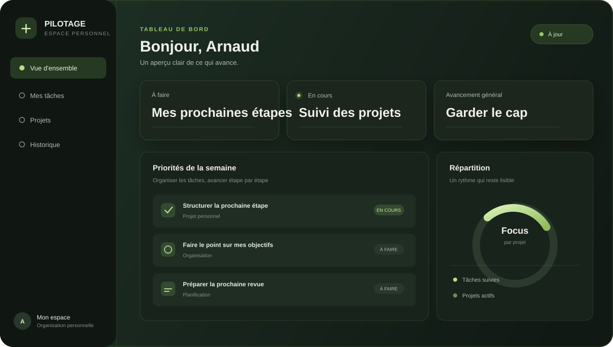
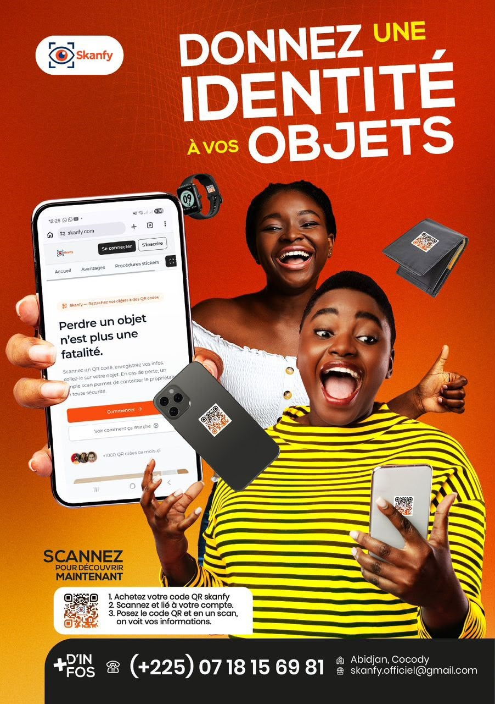
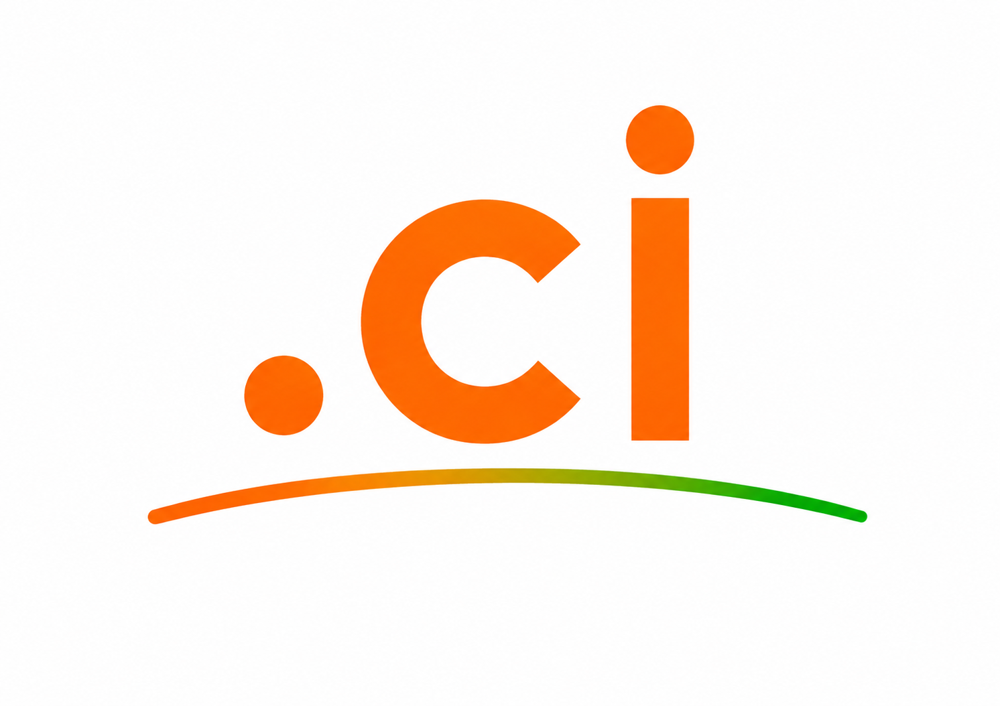

01 / INTERFACE
Développement web
Des interfaces réactives, du navigateur jusqu'aux API.
EN PRATIQUENIC.CI · projets web
Ouvert aux opportunités et aux projets web
BONJOUR, JE SUIS
Diplômé de l'IUA, je suis en stage à l'ARTCI et je participe au développement de NIC.CI. Je m'intéresse aux réseaux, aux infrastructures et au développement web.
Je m'appelle Arnaud Ghislain KOFFI TOA. J'ai terminé une licence en Génie Informatique à l'Institut Universitaire d'Abidjan. L'informatique m'intéresse surtout pour les réseaux, les systèmes et les applications qu'on peut construire avec.
Je suis en stage à l'ARTCI, l'Autorité de Régulation des Télécommunications/TIC de Côte d'Ivoire. Je participe au développement de NIC.CI, la plateforme du domaine national .CI, et je découvre aussi son intégration, son déploiement et sa maintenance.
Je veux continuer à progresser en réseaux, en cybersécurité et en infrastructures, tout en gardant un pied dans le développement web. C'est cette variété qui me plaît dans mon métier.
Mes centres d'intérêt
Choisis un sujet pour en savoir un peu plus.
 01 / INFRARéseaux & infrastructuresExplorer ↗
01 / INFRARéseaux & infrastructuresExplorer ↗J'aime comprendre comment les machines communiquent, comment un réseau est organisé et ce qui permet à un service de rester disponible.
 02 / SÉCURITÉCybersécuritéExplorer ↗
02 / SÉCURITÉCybersécuritéExplorer ↗C'est un domaine que je veux approfondir : protection des systèmes, sécurité des applications et bonnes pratiques au quotidien.
 03 / PRODUITDéveloppement webExplorer ↗
03 / PRODUITDéveloppement webExplorer ↗Je travaille sur des applications web avec React, TypeScript, NestJS et MySQL/Prisma, notamment dans le cadre de mon stage sur NIC.CI.
 04 / IMPACTProjets numériquesExplorer ↗
04 / IMPACTProjets numériquesExplorer ↗J'aime travailler avec d'autres personnes sur une idée, la préciser, puis participer à sa réalisation.
Ce qui me motive
Partir d'un besoin concret, comprendre le problème et construire quelque chose d'utile.
La suite Continuer à progresser dans les réseaux et les infrastructures, sans délaisser le développement web.
Des outils choisis pour concevoir des interfaces utiles, structurer les données et faire tourner des services web.
Des interfaces réactives, du navigateur jusqu'aux API.
EN PRATIQUENIC.CI · projets web
Organiser les données et structurer les échanges entre services.
EN PRATIQUEModélisation · intégration
Configurer l'environnement et accompagner la mise en service.
EN PRATIQUEConfiguration · maintenance
Comprendre les infrastructures et assurer le suivi du support IT.
EN PRATIQUERéseaux · support IT
À l'ARTCI, je participe au développement et au suivi de NIC.CI, le registre du domaine .ci. Je travaille aussi sur la documentation technique, les configurations serveur et les échanges avec les autres registres africains.
Pour mon mémoire, j'ai conçu une application de gestion des inscriptions étudiantes. Elle permet de suivre les dossiers et les paiements Mobile Money (Wave, Orange Money, MTN). Réalisée en PHP MVC et MySQL avec la méthode MERISE.
Avec un collaborateur, je travaille sur un service qui aide à retrouver des objets grâce à un QR code. Nous avons défini le fonctionnement du service, les partenariats possibles et son modèle économique.

J'ai commencé par une application React pour organiser mes tâches et suivre leur avancement. Je la fais évoluer avec une API NestJS, une base PostgreSQL et des comptes utilisateurs.

Avec Skanfy, nous voulons permettre de signaler un objet trouvé en scannant le QR code qui y est apposé. Je travaille avec mon collaborateur sur le service, les partenariats et le modèle économique.

Pour l'équipe NIC.CI, j'ai préparé des guides de configuration serveur, des inventaires de dépendances et des schémas qui expliquent les échanges entre les services.

Mon mémoire de licence : une application web pour gérer les inscriptions étudiantes et leurs paiements Mobile Money, conçue avec MERISE et développée en PHP MVC et MySQL.
En dehors du stage, je mène aussi d'autres projets.
Le podcast et les vidéos me permettent de parler de ce que j'apprends. Je réalise aussi des sites web pour des personnes et des organisations qui veulent présenter leur activité en ligne.
 MR GRIZZLY / ON AIR
MR GRIZZLY / ON AIR
01 — Podcast
Des sujets qui méritent une vraie discussion.
Avec MR GRIZZLY, j'ai envie de parler d'intelligence artificielle, de technologie, d'entrepreneuriat, de développement personnel et de société. J'aimerais qu'on puisse y confronter des idées et parler franchement de sujets qui font débat.
Voir la chaîne YouTube APPRENDRE / PARTAGER
APPRENDRE / PARTAGER
02 — Création
Je partage ce que j'apprends en chemin.
Sur TikTok, je parle de mon parcours en informatique, de mes expériences en stage et des sujets techniques que je découvre. Je partage aussi quelques moments du quotidien.
Voir mon profil TikTok IMAGINER / CONSTRUIRE
IMAGINER / CONSTRUIRE
03 — Pour vos projets
Vous avez besoin d'un site pour votre activité ?
Je réalise des sites web pour particuliers, entrepreneurs, associations et entreprises. On commence par parler de votre besoin, puis on choisit ensemble la solution adaptée.
Vous avez une question ou un projet ?
Écrivez-moi directement ou laissez un message avec le formulaire. Je vous répondrai dès que possible.